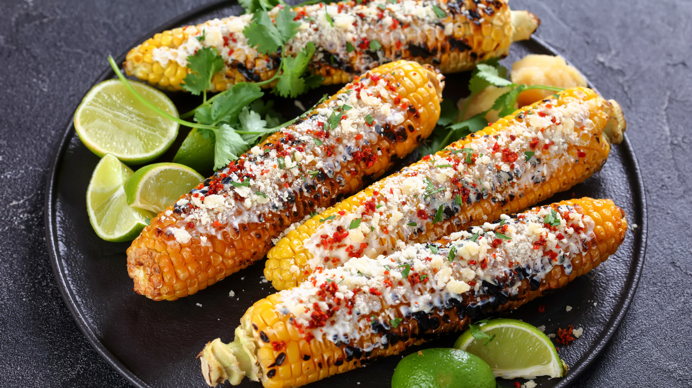

Elote

Description
Elotes are a beloved Mexican street food, often served as a snack or side dish.
They are typically grilled or boiled corn on the cob, coated in a rich, creamy
mixture of mayonnaise and sour cream (or Mexican crema), then topped with a
generous sprinkle of crumbled cotija cheese. The corn is usually dusted with
chili powder for a spicy kick, finished with a squeeze of tangy lime juice for
added freshness. The result is a perfect blend of sweet, savory, creamy,
spicy, and tangy flavors.
Elotes are often served on sticks or directly on the cob, making them easy to
eat on the go, just like you'd find from street vendors in Mexico. The
combination of the charred corn with the creamy sauce, cheese, and spices
makes it irresistible and satisfying, perfect for summer cookouts, barbecues,
or as a fun appetizer.
It’s also a great dish to customize—some people add garlic powder,
paprika, or even hot sauce for extra flavor,
making it a versatile treat!
Ingredients
- 4 ears of corn, husked
- 1/2 cup mayonnaise
- 1/2 cup sour cream or Mexican crema
- 1-2 teaspoons chili powder (or to taste)
- 1 tablespoon fresh lime juice (plus wedges for serving)
- 1/4 cup cotija cheese, crumbled (or parmesan if cotija isn't available)
- Fresh cilantro, chopped (optional)
- Salt to taste
Steps
- Prepare the corn:
- Husk the corn and remove any silk strands.
- Bring a large pot of salted water to a boil (or grill, if you prefer a
smoky flavor).
- Boil the corn for about 8-10 minutes, or grill on medium heat, turning
occasionally, for 10-12 minutes until tender and slightly charred.
- Make the sauce:
- In a bowl, mix the mayonnaise, sour cream (or crema), lime juice, chili
powder, and a pinch of salt. You can adjust the chili powder for more or
less spice depending on your preference.
- Coat the corn:
- Once the corn is cooked and slightly cooled, brush it generously with
the creamy mixture, making sure to coat all sides evenly.
- Add cheese and garnish:
- Roll the coated corn in the crumbled cotija cheese (or sprinkle it over
if you prefer to keep it less messy).
- Top with extra chili powder for more heat and a squeeze of lime juice.
- Serve:
- Garnish with fresh cilantro if you like. Serve with extra lime wedges on
the side for that extra zesty kick!
Home